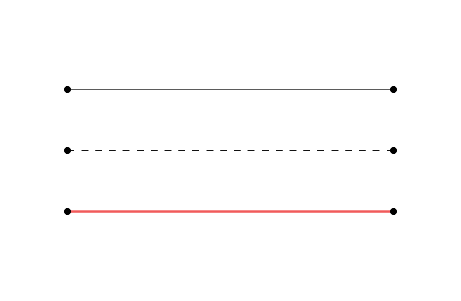
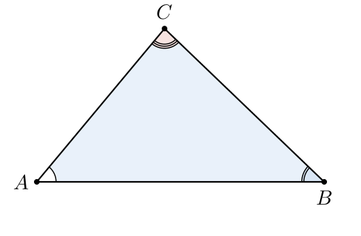

§5 · Стили
Стилевая система AnimaGeo — пять слоёв с чёткими приоритетами. Снизу вверх:
builtin.json → user defaults → overlay (per_type/per_name/автоматика)
→ ImportPolicy (GGB-трансформации в elem.ggb_style) → elem.style (явные per-element записи).
Рендер читает всё через единый resolver.resolve(scene, elem, key).
Архитектура: слои и приоритеты
Каждое визуальное свойство элемента (цвет, размер, прозрачность…) определяется проходом по цепочке слоёв — от самого низкого приоритета к самому высокому. Первое найденное значение побеждает:
| Приоритет | Слой | Источник | Когда применяется |
|---|---|---|---|
| 1 (низший) | builtin.json | Пакетный файл — всегда загружен | Неявно, при создании сцены |
| 2 | defaults | User JSON, deep-merge поверх builtin | applyStyle() |
| 3 | elem.ggb_style | GGB import/adaptation | loadGGB(), пропускается при import.enabled=false |
| 4 | overlay.per_type | User JSON — все элементы типа | Resolver |
| 5 | overlay.per_name | User JSON — конкретный элемент | Resolver |
| 6 (высший) | elem.style | DSL-код / setElementStyle() | Явные per-element записи |
resolver.resolve(scene, elem, key) идёт
elem.style → overlay.per_name → overlay.per_type → elem.ggb_style → defaults.by_type → builtin → default=.
Ссылки на semantic presets ("color.main", "line_width.bold")
разрешаются автоматически на любом слое.
StyleOverlay.apply оставлен
как совместимый hook, но overlay не пишет в elem.style. Логически
overlay находится поверх elem.ggb_style, а explicit DSL/Python-записи
в elem.style выигрывают у overlay.
AnimaGeoScene()
без applyStyle рендерит осмысленно. User JSON сливается через deep_merge —
только переопределённые ключи заменяют builtin.
JSON-схема
{
"name": "my_style",
"version": 0.2,
"presets": {
"color": {
"main": "#4d87c6",
"bold": "#000000",
"aux": "#888888",
"accent": "#f15b5b",
"strong": "#000000",
"background": "#ffffff"
},
"point_size": { "main": 2.83, "bold": 4.25, "aux": 2.12 },
"line_width": { "main": 1, "bold": 1.5, "aux": 0.75 },
"angle_radius": { "main": 17, "shift": 1.5, "right": 17 },
"tick": { "main": { "tick_length_px": 9, "tick_width_px": 1.5, "tick_shift_px": 2 } },
"arrow": { "main": { "arrow_length_px": 11, "arrow_width_px": 7.5 } },
"font_size": { "main": 14 }
},
"defaults": {
"point": { "size_px": "point_size.main", "fill": "color.strong" },
"segment": { "$include": "tick.main", "stroke_width_px": "line_width.main" },
"angle": { "arc_size_px": "angle_radius.main", "arc_shift_px": "angle_radius.shift" },
"polygon": { "fill_opacity": 0.15 }
},
"overlay": {
"per_type": {
"angle": { "arc_size_px": 22, "label_color": "#555" }
},
"per_name": {
"A": { "size_px": 99 }
},
"angle_radius": { "enabled": false },
"label_placement": { "enabled": false }
},
"rendering": {
"line_cap": "butt",
"right_angle_joint": "round",
"polygon_boundary_layer": "top",
"points_display": "auto",
"label_anchor": "BL",
"scale_export": 1
},
"import": {
"policy": {
"size_px": "scale:1.5",
"stroke_width_px": "quantize:[1,2,4]",
"stroke": "remap:{'#1565c0':'#0066cc'}"
}
}
}Секции нового JSON
| Секция | Назначение |
|---|---|
presets | Semantic constants: цвета, размеры, толщины и структуры. Имена main/bold/aux — соглашение, не enum |
defaults | Per-type baseline в пикселях (point.size_px, angle.arc_size_px, …), обычно ссылками на token refs вроде color.main |
canvas | Эталонный холст стиля для preview и масштабируемого экспорта (reference.width/height) |
overlay | Стилизация поверх импорта: per_type, per_name, angle_radius, label_placement. Работает для GGB и DSL |
rendering | Render-флаги: line_cap, right_angle_joint, polygon_boundary_layer, points_display, label_anchor |
import | GGB-трансформации: policy с DSL-директивами (scale:, quantize:, remap:, const:, drop:) |
Все визуальные размеры в defaults и overlay — в пикселях.
Рендерер делит на ptUnit при отрисовке, обеспечивая pixel-invariance.
presets — semantic constants
Секция presets задаёт именованные смысловые константы: цвета,
размеры, толщины и структуры. На них можно ссылаться из defaults,
overlay, rendering и import-маппингов через
"<group>.<name>", например "color.accent".
"presets": {
"color": {
"main": "#4d87c6",
"bold": "#000000",
"aux": "#888888",
"accent": "#f15b5b",
"strong": "#000000",
"background": "#ffffff"
},
"line_width": { "main": 1, "bold": 1.5, "aux": 0.75 },
"arrow": { "main": { "arrow_length_px": 11, "arrow_width_px": 7.5 } }
}main / bold / aux — рекомендуемые смысловые
имена, но пользователь может добавлять любые: construction,
answer, hidden_helper.


Готовые пресеты в репозитории (style/):
default.json сине-красная палитра (базовая)
book_blue.json для печати, синий
book_red.json для печати, красный
book_purple.json фиолетовый
book_green.json зелёный
pandora.json палитра «Pandora»
style_auto.json с включённой автораскладкойimport.policy-маппингом (stroke: "remap:{...}") позволяет
оставить .ggb-файл синим (как в GeoGebra по умолчанию) и
свободно переключать темы при экспорте — синий/красный/зелёный — без
правки исходника.
defaults — per-type baseline (в пикселях)
Секция defaults задаёт значения по умолчанию для каждого типа элемента.
Все размеры — в пикселях. При загрузке пользовательский JSON сливается
с builtin.json через deep_merge — переопределяются только указанные ключи.
"defaults": {
"point": { "size_px": "point_size.main", "fill": "color.strong" },
"segment": { "$include": "tick.main", "stroke_width_px": "line_width.main" },
"line": { "stroke_width_px": 1.0 },
"angle": { "arc_size_px": "angle_radius.main", "arc_shift_px": "angle_radius.shift" },
"polygon": { "fill_opacity": 0.15 },
"circle": { "stroke_width_px": 1.2 }
}Поддерживаемые типы: point, segment, line,
ray, vector, angle, polygon,
circle, arc, circlesector, conic,
function, implicitcurve. Ключи внутри каждого типа —
size_px, stroke_width_px, arc_size_px,
stroke, fill, fill_opacity,
stroke_opacity, label_color, font_size_px,
point_shape, stroke_linecap, stroke_dash_ratio.
overlay — стилизация поверх импорта
Секция overlay — центральный механизм стилизации.
В отличие от ImportPolicy (GGB-only), overlay применяется
одинаково к GGB- и DSL-элементам. Выполняется на этапе
addAllGeometry() — до рендера; логически находится поверх GGB import.
per_type — стилизация по типу элемента
Все элементы указанного типа получают заданные ключи. Применяется первым.
"overlay": {
"per_type": {
"angle": { "arc_size_px": 22, "label_color": "#555" },
"point": { "size_px": 7 },
"polygon": { "fill_opacity": 0.1 }
}
}per_name — точечный оверрайд по имени
Конкретный элемент (по имени) получает указанные ключи. Применяется вторым, поверх per_type — last write wins.
"overlay": {
"per_name": {
"A": { "size_px": 99 },
"alpha": { "fill": "#fdddd7", "tick_count": 2 }
}
}angle_radius — авто-масштабирование дуг углов
Для узких углов фиксированный радиус дуги теряется между сторонами.
Флаг angle_radius.enabled включает авто-подбор: радиус масштабируется
по формуле (pivot_rad / angle) ** exp и зажимается в [min_px, max_arm_fraction × arm].
"overlay": {
"angle_radius": {
"enabled": true,
"exp": 0.25,
"pivot_rad": 1.5708,
"min_px": 12,
"max_arm_fraction": 0.65,
"apply_to_right": false
}
}Per-element escape: elem.style['auto_radius'] = False фиксирует
базовый радиус для конкретного угла.
label_placement — авто-раскладка подписей
Флаг label_placement.enabled включает автоматическую раскладку подписей
при загрузке. Подписи расталкиваются от геометрии жадным солвером — см. §6.
"overlay": {
"label_placement": {
"enabled": true,
"distance_px": 6,
"padding_px": 2,
"angle_gap_arc_px": 3,
"angle_gap_sides_px": 3
}
}elem.ggb_style,
поэтому overlay выигрывает у GGB import/adaptation. Но explicit-правки в
elem.style всегда выше overlay, независимо от того, были они сделаны
до или после addAllGeometry().
overlay рядом с per_type и per_name.
rendering.angle_radius и rendering.label_placement
отклоняются валидатором.
import.policy — GGB-трансформации
Секция import.policy управляет конверсией сырых GGB-значений
(elem.ggb_raw) в elem.ggb_style. Работает только для GGB-импорта;
DSL-элементы не имеют ggb_raw и эта секция их не затрагивает.
DSL-директивы: "scale:1.5" (умножить), "quantize:[1,2,4]" (снап),
"remap:{...}" (замена), "const:3" (фиксированное), "drop:" (удалить ключ).
Подробно — §4 · ImportPolicy.
"import": {
"policy": {
"size_px": "scale:1.5",
"stroke_width_px": "quantize:[1,2,4]",
"stroke": "remap:{'#1565c0':'#0066cc'}",
"font_size_px": 14
}
}rendering — глобальные флаги рендера
| Ключ | Значения | Эффект |
|---|---|---|
line_cap | butt / round / square | окончания линий (по умолчанию; перекрывается elem.style.stroke_linecap) |
right_angle_joint | auto / bevel / miter / round | соединение сторон в метке прямого угла |
polygon_boundary_layer | top / null | top — контур полигона поверх заливки (z_index=10) |
points_display | auto / only_labels / only_points | режим отображения точек |
label_anchor | TL..BR | сценовый дефолт-якорь подписи (9-точечная сетка, §6) |
scale_export | число | legacy-множитель px_size; для нового экспорта используйте export_size/export_fit (§9) |
Окончания линий


Режимы отображения точек


elem.style — per-element overrides
Любой элемент сцены имеет словарь style. В него можно положить
точечные переопределения. Записи после addAllGeometry() (через DSL или
setElementStyle()) выигрывают у всех слоёв —
defaults, overlay, ImportPolicy.
Записи до addAllGeometry() (внутри DSL-строки putCode())
будут перекрыты overlay — он отрабатывает позже. Чтобы DSL-стиль точно победил,
пишите в elem.style после вызова addAllGeometry().
Общие ключи (применимы к большинству элементов)
| Ключ | Значение | Применяется к |
|---|---|---|
stroke | hex-цвет | все линии и контуры |
stroke_width_px | число (pixel-invariant) | все линии и контуры |
stroke_opacity | 0..1 | все линии |
stroke_dash_ratio | 0 (solid) или 0.3–1.0 | сегменты, линии, лучи, CIRCLE (см. §7) |
stroke_linecap | butt/round/square | сегменты, линии, лучи |
fill | hex-цвет | полигоны, секторы, точки, углы |
fill_opacity | 0..1 | то же |
z_index | число (0=фон, 100=верх) | все (порядок отрисовки) |
label_visible | True/False | все |
label_text | строка (TeX или Unicode) | все |
label_color | hex-цвет | все |
label_anchor | TL..BR | все (см. §6) |
label_offset_px | [dx, dy] px | все (доп. сдвиг подписи) |
font_size_px | число (pixel-invariant) | все |
Точки
| Ключ | Значение |
|---|---|
size_px | радиус в pixel-invariant единицах |
point_shape | форма: circle/square/diamond/triangle_up/triangle_down/triangle_left/triangle_right/cross/plus |
Три типичных «типа» точки:

# сплошная чёрная
A.style['fill'] = '#000000'; A.style['stroke'] = '#000000'
# кольцо (белая заливка + контур)
B.style['fill'] = '#ffffff'; B.style['stroke'] = '#000000'; B.style['stroke_width_px'] = 1.4
# цветная с контуром
C.style['fill'] = '#f15b5b'; C.style['stroke'] = '#000000'Линии и сегменты
| Ключ | Значение |
|---|---|
tick_count | 1, 2 или 3 — число штрихов равенства |
tick_style | line (по умолчанию) / wave |
tick_width_px, tick_length_px, tick_shift_px | размеры штриха в пикселях |
Штрихи равенства (tick_count) рисуются перпендикулярно
сегменту у его середины:

A = Point(-4, 1.5); B = Point(4, 1.5)
C = Point(-4, 0); D = Point(4, 0)
E = Point(-4, -1.5); F = Point(4, -1.5)
s1 = Segment(A, B)
s2 = Segment(C, D)
s3 = Segment(E, F)
s1.style.stroke_width_px = 0.75
s2.style.stroke_width_px = 1.5
s2.style.stroke_dash_ratio = 0.5
s3.style.stroke_width_px = 3
s3.style.stroke = '#f15b5b'
Углы
| Ключ | Значение |
|---|---|
arc_size_px | радиус внешней дуги в пикселях (переопределяет defaults.angle.arc_size_px) |
arc_shift_px | шаг между концентрическими дугами |
tick_count | 1, 2 или 3 концентрических дуги / метки равенства углов |
fill, fill_opacity | заливка сектора |
auto_radius | False — отключить overlay.angle_radius-масштабирование для этого угла |
Несколько концентрических дуг отмечают равные углы; прямой угол рисуется квадратным маркером:


Полигоны


A = Point(-4.5, -2)
B = Point(4.5, -2)
C = Point(-0.5, 2.8)
p, a, b, c = Polygon(A, B, C)
alpha = Angle(B, A, C)
beta = Angle(C, B, A)
gamma = Angle(A, C, B)
style(A, B, C, label_visible=True)
alpha.style.label_text = r'$\alpha$'
beta.style.label_text = r'$\beta$'
gamma.style.label_text = r'$\gamma$'
p.style.fill = '#d6e5f6'
p.style.fill_opacity = 0.55
alpha.style.tick_count = 1
beta.style.fill = '#d6e5f6'
beta.style.fill_opacity = 0.7
beta.style.tick_count = 2
gamma.style.fill = '#fdddd7'
gamma.style.fill_opacity = 0.7
gamma.style.tick_count = 3
Два слоя Python-кода: inside DSL и outside scene
Стиль любого элемента можно задать двумя способами — внутри DSL
(в строке, передаваемой в putCode) или снаружи, уже
в методах класса AnimaGeoScene. Разделение:
| Что | Где можно | Типичный выбор |
|---|---|---|
Геометрия (Point, Polygon, Angle …) |
только inside | всегда в DSL / из .ggb |
Стили элементов (stroke, fill, tick_count, label_text …) |
inside и outside | разделяемо — см. два примера ниже |
Сценовая конфигурация (applyStyle, rendering, ImportPolicy) |
только outside | всегда в construct() |
Анимация (play, addUpdater, keyframes) |
только outside | всегда в construct() |
Экспорт (exportSVG, render) |
только outside | всегда в construct() |
Две идиомы — одна картинка. Слева весь стиль внутри DSL (код самодостаточен), справа конструкция в DSL и стили снаружи (подход удобнее, когда стили генерируются из данных или применяются массово).
class Scene(AnimaGeoScene):
def construct(self):
self.applyStyle(style_file='guide_style.json', px_size=[520, 340])
self.putCode("""
A = Point(-3, -1.5)
B = Point(3, -1.5)
C = Point(0, 2.3)
p, a, b, c = Polygon(A, B, C)
alpha = Angle(B, A, C)
style(A, B, C, label_visible=True)
alpha.style.label_visible = True
alpha.style.label_text = r'$\alpha$'
p.style.fill = '#d6e5f6'
p.style.fill_opacity = 0.55
alpha.style.fill = '#fdddd7'
alpha.style.tick_count = 2
""")
self.addAllGeometry(show=True)
self.autoPlaceLabels()
self.exportSVG('out.svg')class Scene(AnimaGeoScene):
def construct(self):
self.applyStyle(style_file='guide_style.json', px_size=[520, 340])
self.putCode("""
A = Point(-3, -1.5)
B = Point(3, -1.5)
C = Point(0, 2.3)
p, a, b, c = Polygon(A, B, C)
alpha = Angle(B, A, C)
""")
for n in ('A', 'B', 'C'):
self.element(n).style['label_visible'] = True
self.element('alpha').style['label_visible'] = True
self.element('alpha').style['label_text'] = r'$\alpha$'
self.setElementStyle(['p'], fill='#d6e5f6', fill_opacity=0.55)
self.setElementStyle(['alpha'], fill='#fdddd7', tick_count=2)
self.addAllGeometry(show=True)
self.autoPlaceLabels()
self.exportSVG('out.svg')Когда какой слой:
- A (всё в DSL) — короткий скрипт, пример/иллюстрация, один файл, легко опубликовать или переслать. Минус: при массовой стилизации кода в DSL становится много.
- B (split) — удобно, когда стили приходят из внешних данных
(JSON-конфиг, ImportPolicy), когда вы стилизуете много элементов
единообразно через
setElementStyle/setVisible, или когда DSL импортируется из.ggbи вы только дорисовываете стили.
Оба подхода 100% совместимы и смешиваются свободно. elem.style
— обычный dict, в него пишут и DSL, и хост.
Pixel-invariance
AnimaGeo задумана так, чтобы один и тот же код давал одинаковый
вид на разных размерах холста. Точка, заданная через size=5,
всегда отрисуется как 5-пиксельный диск, независимо от того, экспорт
480×320 или 1920×1080.
Технически: все визуальные размеры хранятся в пикселях, а
на рендере делятся на ptUnit — масштабный коэффициент,
зависящий от px_size.

Что определяет ptUnit
ptUnit = px_size.width / 2 / xmax
= (например) 800 / 2 / 10 = 40
# Соответственно:
# size=5 → radius = 5 / 2 / 40 = 0.0625 MU
# При 1600×600: ptUnit=80, тот же size=5 → 0.03125 MU — ровно в 2 раза меньше в MU,
# но на экране (в пикселях) то же.ptUnit.
Если хотите pixel-invariant окружность, задайте её как
Circle(O, P) с точкой P, а не как Circle(O, r_mu).
Scaling-константы
Формулы перевода между единицами живут в constants.py.
Обычно их трогать не надо — но знать, что они есть, полезно для
понимания поведения.
| Константа | Значение | Что делает |
|---|---|---|
STYLE_TO_INTERNAL | 0.02 | JSON style pt → internal scale (для dot.main, line.main, …) |
LINE_WIDTH_SCALE | 2 | JSON line width → manim stroke width |
STROKE_WIDTH_SCALE | 100 | stroke_width_px → manim units (÷ ptUnit) |
GGB_FONT_SCALE | 100.0 | GGB font px → manim font_size (÷ ptUnit) |
FONT_SIZE_RATIO | 50/25.9 ≈ 1.93 | JSON font size → manim font size |
Z-index tiers
Порядок отрисовки задаётся через z_index в elem.style.
Именованные уровни — в constants.py:


p.style['z_index']=20 — polygon поверх